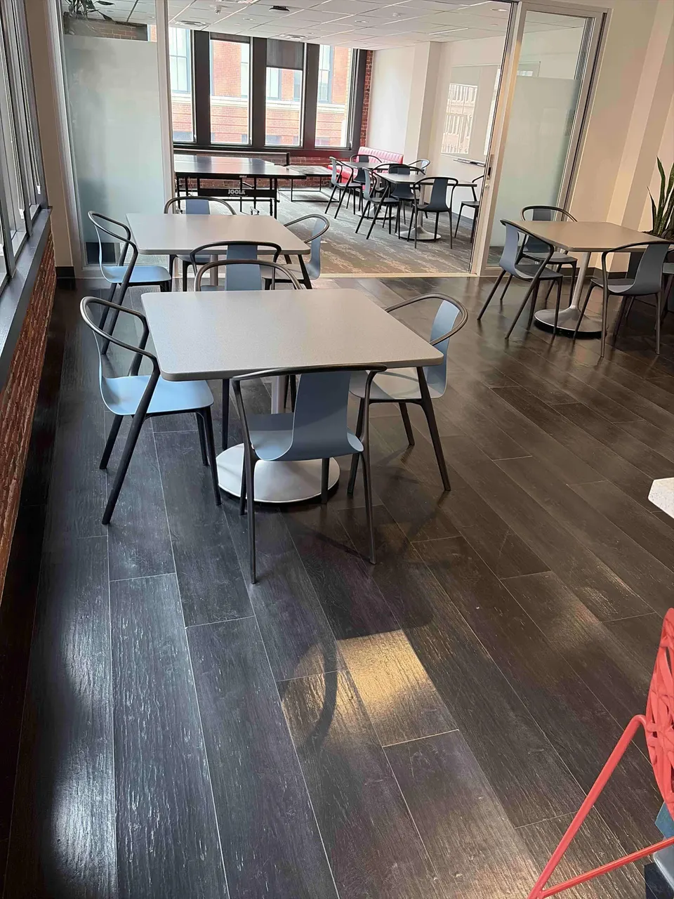
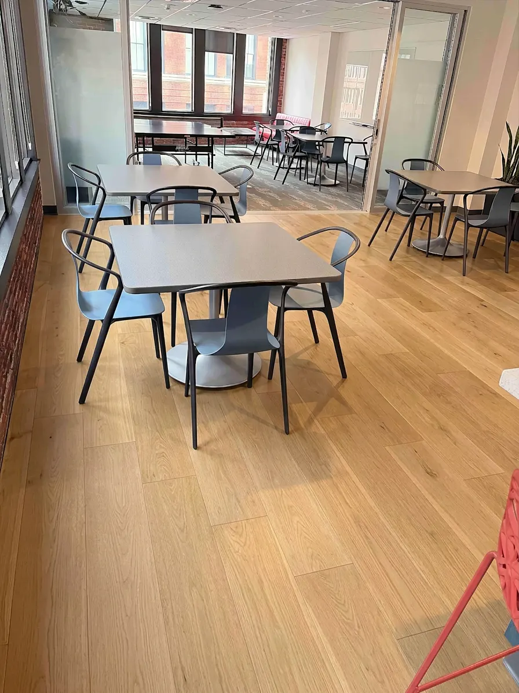
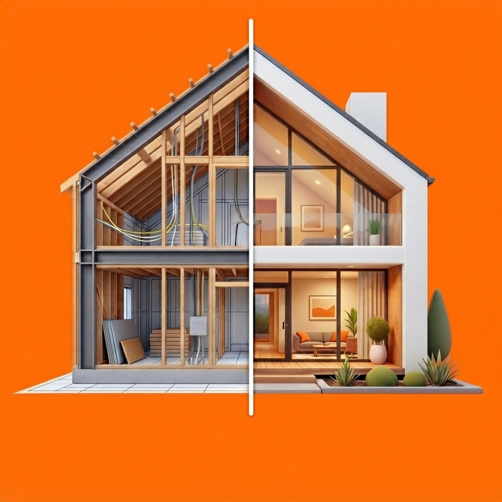
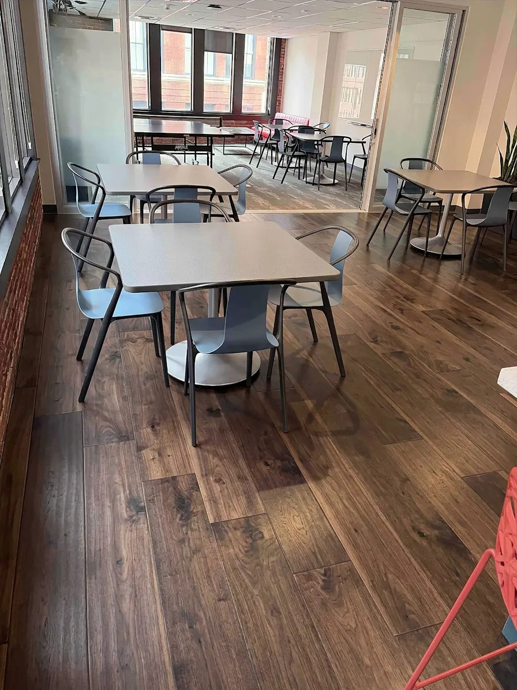

AfterlookAI renovation visualizer for iPhone
Turn one photo into a clear renovation preview. Try new floors, paint, tile and finishes—then price the project and share the vision before the work begins.
The idea
Afterlook helps homeowners make decisions with confidence and gives contractors a faster way to communicate the finished vision.
From photo to plan
Start with the space you already have. Build the version you want, one surface at a time.
Take a clear photo or choose one from your library. Afterlook identifies editable areas in the space.
Tap the floor, walls, ceiling or another area. Pick a material, color or finish and let AI render the change.
Add quantities, unit prices and extras. Send clients a polished before-and-after page they can open anywhere.
Real Afterlook comparison
Compare two real shared projects created with Afterlook. See how a lighter or darker floor changes the room, then open either option to review its preview and full estimate.
$2.24 apart. The decision comes down to the look—not the budget.



Built for real decisions
Keep refining the same room, step by step. Revert an edit instantly if the direction isn't right.
Add quantities, unit prices, waste or contingency, labor, permits and other project costs.
Explore product and finish suggestions matched to the style and budget of your project.
Share the before, after and estimate in a web page your client can view without installing the app.
Two perspectives, one picture
For homeowners
For contractors
Questions
Afterlook is an iPhone app that transforms room photos into AI renovation previews and helps homeowners and contractors estimate and share a project before work begins.
Yes. Select a detected area such as the floor, walls or ceiling, then apply a material, color or finish to that area. You can layer multiple changes on the same room.
Yes. Afterlook can create a shareable before-and-after page with the project estimate that opens in a web browser.
Photos are processed to generate renovation previews and stored so you can revisit projects. Read the privacy policy for details and deletion instructions.
Available now